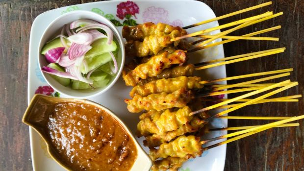

"Satay" Local Malaysian Food
Ingredients
- Chicken pieces – chicken thighs yield the juiciest chicken skewers but breast or tenderloin are fine
- Red curry paste
- Curry powder
- Coconut milk
- Salt and sugar
- Coconut milk/li>
- Red curry paste
- Cider or white vinegar (not lime juice!)
- Pure peanut butter
- Soy sauce
- Sugar and salt
Preperations
- Mix together the chicken and Marinade with 1/4 cup of coconut milk, then set aside for at least 20 minutes,
or overnight.
- Thread onto skewers - I do 4 to 5 pieces each
- Heat 1.5 tbsp oil in a large non stick pan over medium high heat.
- Cook skewers in batches for 3 minutes on each side until golden.
- Place remaining coconut milk and Peanut Sauce ingredients in a saucepan over medium low heat.
- Stir to combine then simmer, stirring every now and then, for 5 minutes.
- Adjust consistency with water - it should be a pourable but thickish sauce.
- Cover with lid and keep warm while cooking skewers.